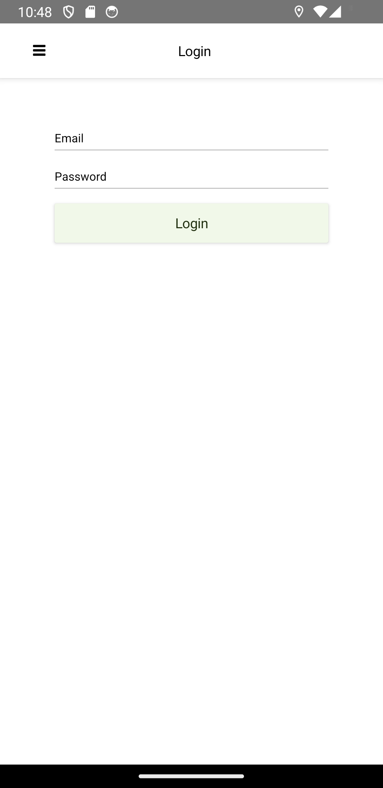
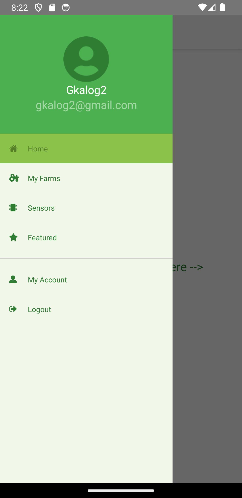
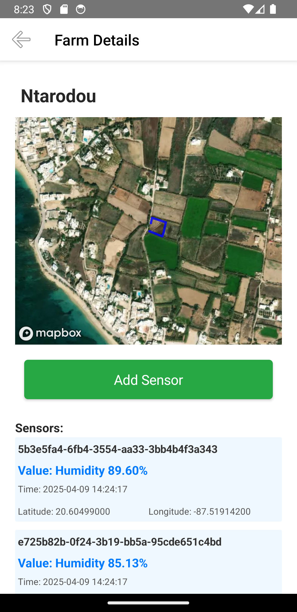
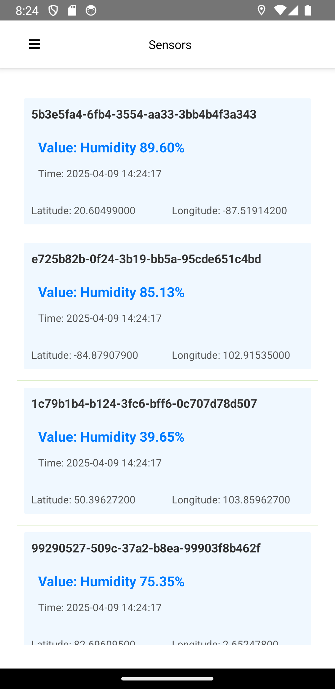
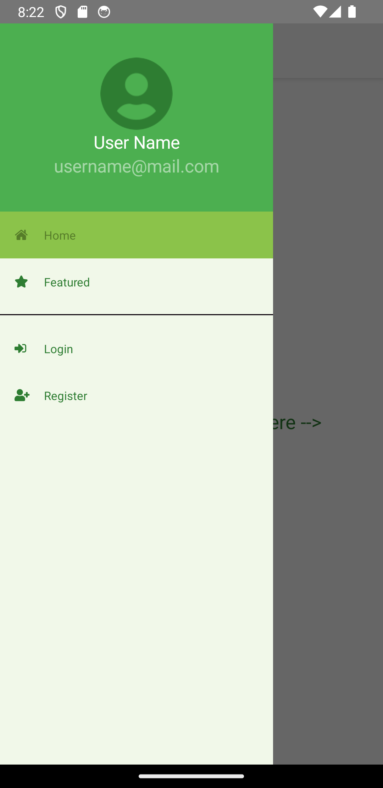

Συνοδευτικό Κείμενο Εφαρμογής AgroSense
1. Εισαγωγή
Η AgroSense είναι μία έξυπνη εφαρμογή αγροτεχνολογίας για Android συσκευές, η οποία έχει ως στόχο την αποδοτική διαχείριση του νερού στις αγροτικές καλλιέργειες, αξιοποιώντας τεχνολογίες IoT και γεωχωρικά δεδομένα. Η εφαρμογή επιτρέπει στους χρήστες να καταγράφουν αγροτεμάχια μέσω GPS, να συνδέουν αισθητήρες υγρασίας μέσω QR code, να λαμβάνουν μετρήσεις σε πραγματικό χρόνο και να παρακολουθούν τα δεδομένα.
2. Ανάλυση Λειτουργικών Απαιτήσεων
Η εφαρμογή υποστηρίζει:
- Δημιουργία και διαχείριση λογαριασμού χρήστη.
- Καταγραφή γεωγραφικών αγροτεμαχίων με GPS.
- Εγκατάσταση αισθητήρων υγρασίας μέσω σάρωσης QR κωδικού.
- Υποβολή και αποθήκευση μετρήσεων.
- Προβολή δεδομένων μέσω χαρτών και λιστών.
- Διαχείριση λογαριασμού χρήστη.
- Επεκτασιμότητα για πολλαπλούς χρήστες και αισθητήρες.
3. Σχεδιασμός Αρχιτεκτονικής
Η αρχιτεκτονική αποτελείται από:
- Backend: Laravel REST API με Sanctum authentication και βάση δεδομένων MySQL.
- Frontend: NativeScript + Vue.js για mobile app.
- Επικοινωνία: HTTPS αιτήσεις από mobile προς API.
- Δεδομένα: Αισθητήρες, μετρήσεις και γεωγραφικά όρια αποθηκεύονται στο backend.
4. Υλοποίηση Τεχνολογιών
Η εφαρμογή υλοποιεί:
- Συνδεσιμότητα στο Διαδίκτυο μέσω API.
- Επίγνωση θέσης με χρήση GPS αισθητήρα κινητού.
- CRUD λειτουργίες με αποθήκευση σε βάση δεδομένων.
- RESTful endpoints για διαχείριση: χρηστών, farms, sensors, measurements.
Ενδεικτικά Endpoints:
-
- POST /api/register
-
- POST /api/login
-
- POST /api/farms
-
- POST /api/sensors/scan
-
- POST /api/measurements
5. Υλοποίηση Τεχνολογιών Επιλογής
Υποστηρίζονται οι εξής τεχνολογίες:
- Web Services (REST API)
- Sensor Technology: GPS συσκευής
- QR Coding: σάρωση αισθητήρων με χρήση κάμερας
- Access to Phone Resources: πρόσβαση σε κάμερα κινητού
6. Screenshots Εφαρμογής
Εικόνα 1 – Οθόνη Σύνδεσης

Εικόνα 2 – Επιτυχής Σύνδεση

Εικόνα 3 – Πλευρικό Μενού Συνδεδεμενου χρηστη

Εικόνα 4 – Λίστα Αγροτεμαχίων

Εικόνα 5 – Εμφάνιση Αγροτεμαχίου με τους αισθητηρες του

Εικόνα 6 – Λιστα αισθητήρων

Εικόνα 7 – Καταχώρηση αισθητήρα

Εικόνα 8 – Εμφάνιση Αισθητηρα στο χαρτη με τις μετρησεις του

Εικόνα 9 – Πλευρικο μενου χωρις να εχει κανει login ο χρηστης

7. Παραδείγματα Κώδικα από την Εφαρμογή
Παρακάτω παρατίθενται σύνδεσμοι προς τα βασικά components της εφαρμογής στο GitHub repository:
8. Παράδειγμα Σεναρίου Χρήσης
Ο Γιώργος είναι ένας νέος αγρότης που θέλει να παρακολουθεί την υγρασία του εδάφους στα χωράφια του ώστε να βελτιώσει την άρδευση και να μειώσει τη σπατάλη νερού.
-
Εγγραφή και Σύνδεση:
Ο Γιώργος ανοίγει την εφαρμογή AgroSense, δημιουργεί λογαριασμό με το email του και συνδέεται. -
Καταγραφή Αγροτεμαχίου:
Περπατώντας γύρω από το χωράφι του, χρησιμοποιεί την εφαρμογή για να ορίσει τα όρια του αγροτεμαχίου με τη χρήση του GPS της κινητής συσκευής του. -
Τοποθέτηση Αισθητήρων:
Ο Γιώργος τοποθετεί έναν-έναν τους αισθητήρες υγρασίας στα σημεία που τον ενδιαφέρουν περισσότερο να παρακολουθεί την υγρασία του εδάφους (π.χ. άκρες, μέση, χαμηλά σημεία). -
Καταγραφή Θέσης και QR Σάρωση:
Κάθε φορά που τοποθετεί έναν αισθητήρα, χρησιμοποιεί την εφαρμογή για να σαρώσει τον QR κωδικό του αισθητήρα. Την ώρα της σάρωσης, η εφαρμογή χρησιμοποιεί το GPS του κινητού για να καταγράψει τη γεωγραφική του θέση και να τον αντιστοιχίσει στο αγροτεμάχιο. -
Λήψη Μετρήσεων:
Οι αισθητήρες αρχίζουν να στέλνουν μετρήσεις υγρασίας στο backend και ο Γιώργος μπορεί να τις δει στην εφαρμογή σε πραγματικό χρόνο. -
Ανάλυση Δεδομένων:
Μέσα από την ενότητα ιστορικού, ο Γιώργος μπορεί να δει διαγράμματα με τις τιμές υγρασίας ανά αισθητήρα και να εντοπίσει πότε και πού χρειάζεται άρδευση. -
Διαχείριση και Ασφάλεια:
Τέλος, ο Γιώργος μπορεί να επεξεργαστεί τα στοιχεία του λογαριασμού του και να αποσυνδεθεί με ασφάλεια.